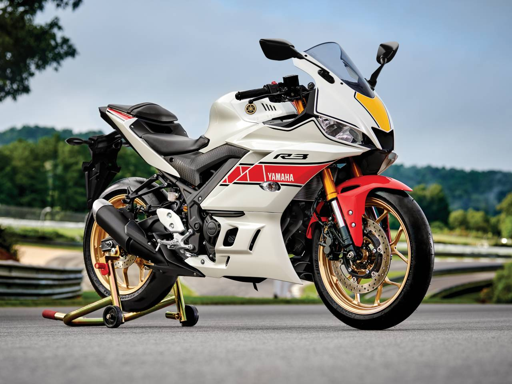

A Yamaha YZF-R3 é uma motocicleta esportiva fabricada pela Yamaha desde 2015. Possui um motor de 321cc, quatro tempos, dois cilindros em linha e refrigeração líquida, capaz de produzir cerca de 42 cavalos de potência. Possui um chassi em treliça de aço, suspensão dianteira invertida, freios a disco e sistema de freios ABS. Com um peso de cerca de 169kg, é uma moto ágil e fácil de manobrar, ideal para pilotagem esportiva ou para uso diário. A YZF-R3 é uma motocicleta popular entre motociclistas iniciantes e experientes que buscam uma moto esportiva de tamanho médio e desempenho sólido.
A Yamaha YZF-R3 foi lançada em 2015 como uma opção de motocicleta esportiva de tamanho médio para preencher a lacuna entre a YZF-R125 e a YZF-R6 da Yamaha. Ela foi projetada para oferecer um equilíbrio entre desempenho, facilidade de pilotagem e conforto para o uso diário.
Desde o seu lançamento, a YZF-R3 tem sido popular entre os motociclistas iniciantes e experientes que buscam uma moto esportiva de tamanho médio e desempenho sólido. Em 2019, a Yamaha lançou uma atualização para a YZF-R3 com uma nova aparência, melhorias no desempenho e tecnologia de assistência ao piloto. A YZF-R3 continua a ser uma das motocicletas esportivas mais populares do mercado, oferecendo uma combinação única de desempenho e usabilidade.